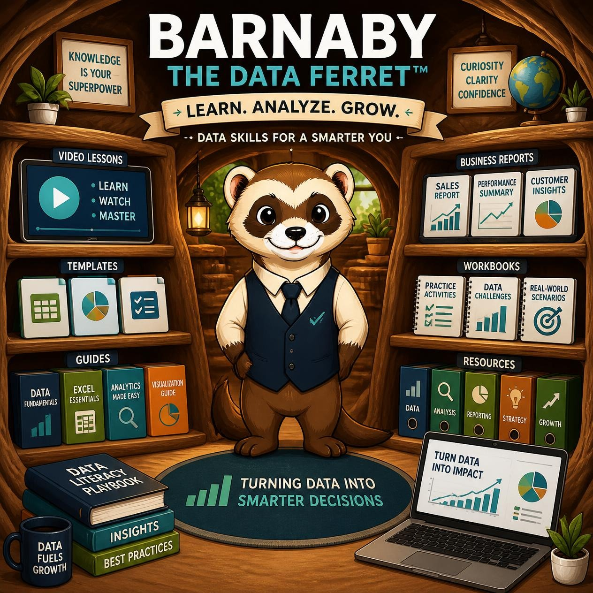

Identify. Validate. Improve.
Many organizations struggle with aging systems, disconnected data, reporting inconsistencies, undocumented processes, and information that nobody fully trusts. The Data Ferret Assessment™ is designed to uncover the source of those problems and provide a roadmap for modernization, reporting improvement, and data integrity.
📅 Schedule Assessment 📖 Learn More 🐾 Return to The BurrowIf I have to do it twice, there's probably a better way.📅 Schedule Assessment 📖 Learn More 🐾 Return to The Burrow